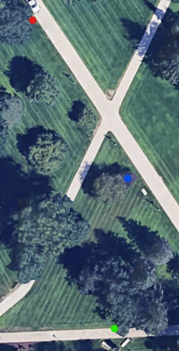

Stats
Par: 11
Distance: 285 ft
Hole Description
Starting from on the path infront of the obelisk, this hole has a mandatory right of the small purple tree ahead, and the the target is the second lammpost after the intersection far down the path on the left.
Map key: green dot starting box, red dot target, blue dot mandatory.